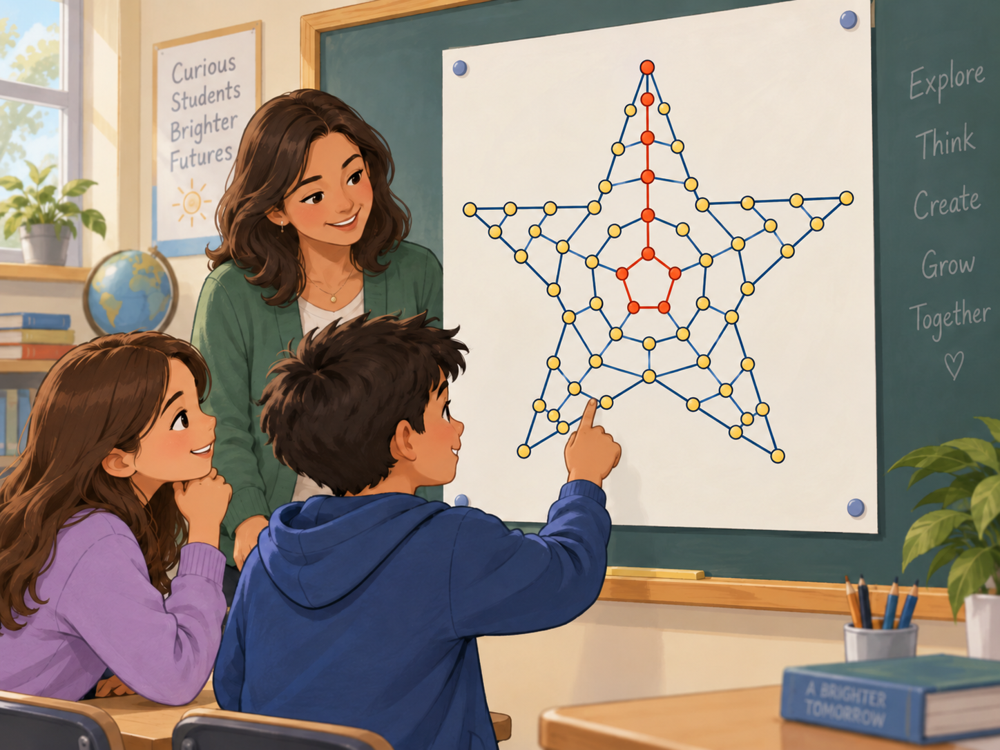

Near-edge starting position
5,546,105possible paths through one section
Educator Resources · Path Counting Exploration
Reaching every ending point is not the same as reaching it in the same number of ways.

Start with a question
Every starting point in one section of The Great American Star can reach every ending point.
If they can all reach the same ending points, why don’t they all produce the same number of paths?
5,546,105possible paths through one section
8,097,610possible paths through one section
Both starting positions can reach every ending point, but the middle starting position can reach them through many more different routes.
11 starting points · top
Same 10 ending points · bottom
Can reach all 10 ending points, but reaching endings on the far side requires many steps to keep moving in that direction, leaving fewer ways to vary the route.
5,546,105possible paths through one section
11 starting points · top
Same 10 ending points · bottom
Can reach all 10 ending points, with more freedom to vary left/right choices while still arriving at the same endings.
8,097,610possible paths through one section
The core idea
Reaching an ending point tells us only that at least one route exists. Path counting asks a different question: How many different routes can get there?
A near-edge starting point can reach a far-side ending, but many of its steps must keep moving toward that side, leaving fewer opportunities to vary the route.
A middle starting point has more freedom to vary its left/right choices while still arriving at the same ending point.
Both can reach every ending point, but the middle can reach them through more different paths.
The full-star surprise
Within one section, the corner has 4,194,280 paths and the middle has 8,097,610 paths.
But a physical corner of the complete five-pointed star belongs to two adjoining sections.
Simplified structural illustration — adjoining sections highlighted
Section A4,194,280 paths
Section B4,194,280 paths
Middle starting position8,097,610 paths
Difference: 290,950 more paths
4,194,280 × 2 = 8,388,560 paths
8,388,560paths in the complete star
8,097,610paths in the complete star
8,388,560 − 8,097,610 = 290,950
How can the starting position with the fewest paths in one section end up with more paths than the middle in the complete star?
Pause, predict, discuss